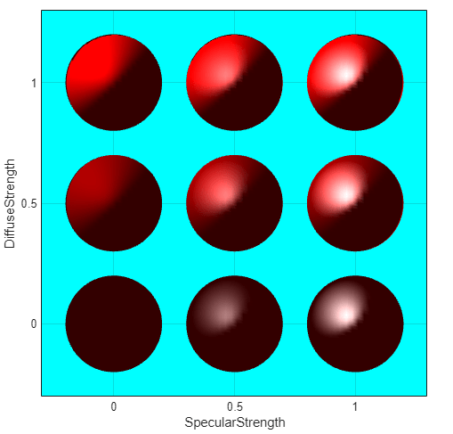
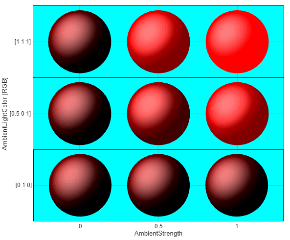
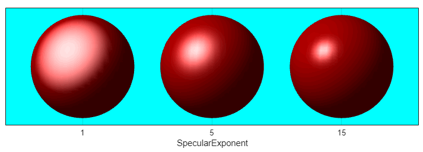
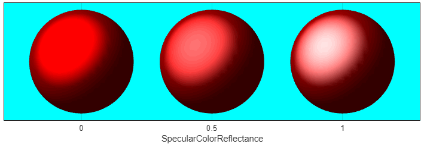
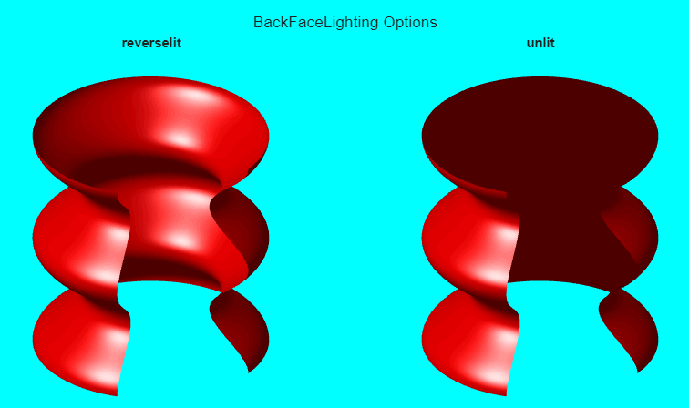
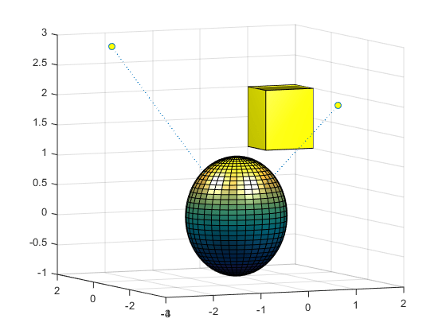

Reflectance Characteristics of Graphics Objects
Specular and Diffuse Reflection
You can specify the reflectance characteristics of patch and surface objects and thereby affect the way they look when lights are applied to the scene. It is likely you will adjust these characteristics in combination to produce particular results.
Also see the
material command for a convenient
way to produce certain lighting effects.
You can control the amount of specular and diffuse reflection from the surface of
an object by setting the SpecularStrength and DiffuseStrength properties. This picture illustrates
various settings.

Ambient Light
Ambient light is a directionless light that shines uniformly on all objects in the
scene. Ambient light is visible only when there are light objects in the axes. There
are two properties that control ambient light — AmbientLightColor is an axes property that sets the color,
and AmbientStrength is a property of patch and surface objects
that determines the intensity of the ambient light on the particular object.
This illustration shows three different ambient light colors at various intensities. The sphere is red and there is a white light object present.

The green [0 1 0] ambient light does not affect the scene because there is no red component in green light. However, the color defined by the RGB values [.5 0 1] does have a red component, so it contributes to the light on the sphere (but less than the white [1 1 1] ambient light).
Specular Exponent
The size of the specular highlight spot depends on the value of the patch and surface object's
SpecularExponent property. Typical values for this property
range from 1 to 500, with normal objects having values in the range 5 to 20.
This illustration shows a red sphere illuminated by a white light with three
different values for the SpecularExponent property.

Specular Color Reflectance
The color of the specularly reflected light can range from a combination
of the color of the object and the color of the light source to the color of the
light source only. The patch and surface SpecularColorReflectance
property controls this color. This illustration shows a red sphere illuminated by a
white light. The values of the SpecularColorReflectance property range from 0
(object and light color) to 1 (light color).

Back Face Lighting
Back face lighting is useful for showing the difference between internal and external faces. These pictures of cut-away cylindrical surfaces illustrate the effects of back face lighting.

The default value for BackFaceLighting is
reverselit. This setting reverses the direction of the vertex normals that face away from the camera, causing the interior
surface to reflect light towards the camera. Setting
BackFaceLighting to unlit disables
lighting on faces with normals that point away from the camera.
Positioning Lights in Data Space
This example creates a sphere and a cube and illuminates then with two light sources. The light objects are located at infinity, but in the directions specified by their position vectors.
% Create a sphere sphere(36); axis([-3 3 -3 3 -3 3]) hold on % Create a cube fac = [1 2 3 4;2 6 7 3;4 3 7 8;1 5 8 4;1 2 6 5;5 6 7 8]; vert = [1 1 1;1 2 1;2 2 1;2 1 1;1 1 2;1 2 2;2 2 2;2 1 2]; patch('faces',fac,'vertices',vert,'FaceColor','y'); % Add lights light('Position',[1 3 2]); light('Position',[-3 -1 3]); hold off
The light functions define two light objects located at
infinity in the direction specified by the Position vectors.
These vectors are defined in axes coordinates [x,
y, z].
